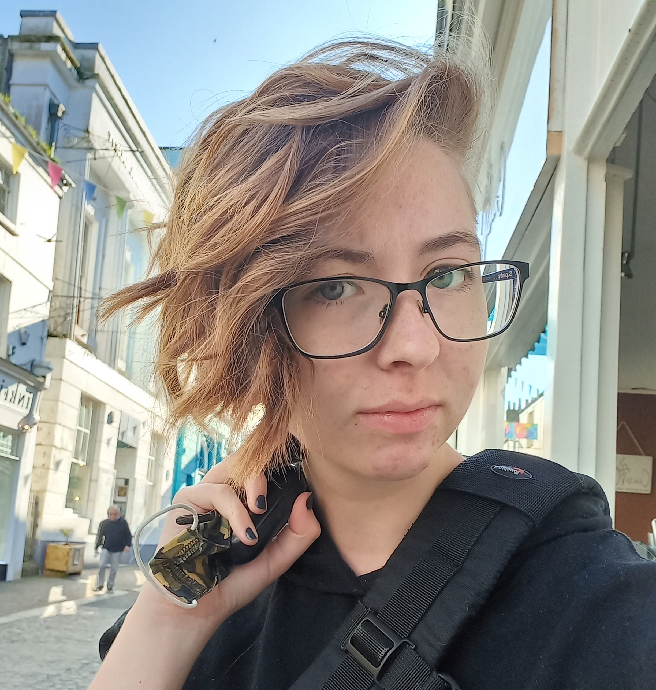
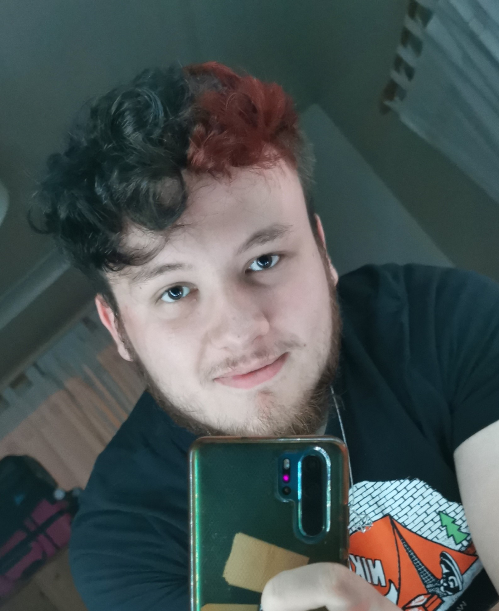
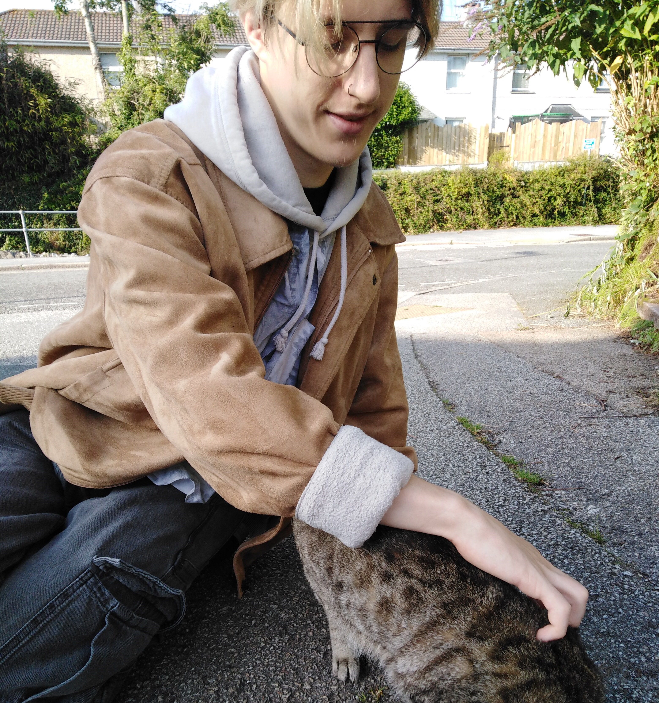
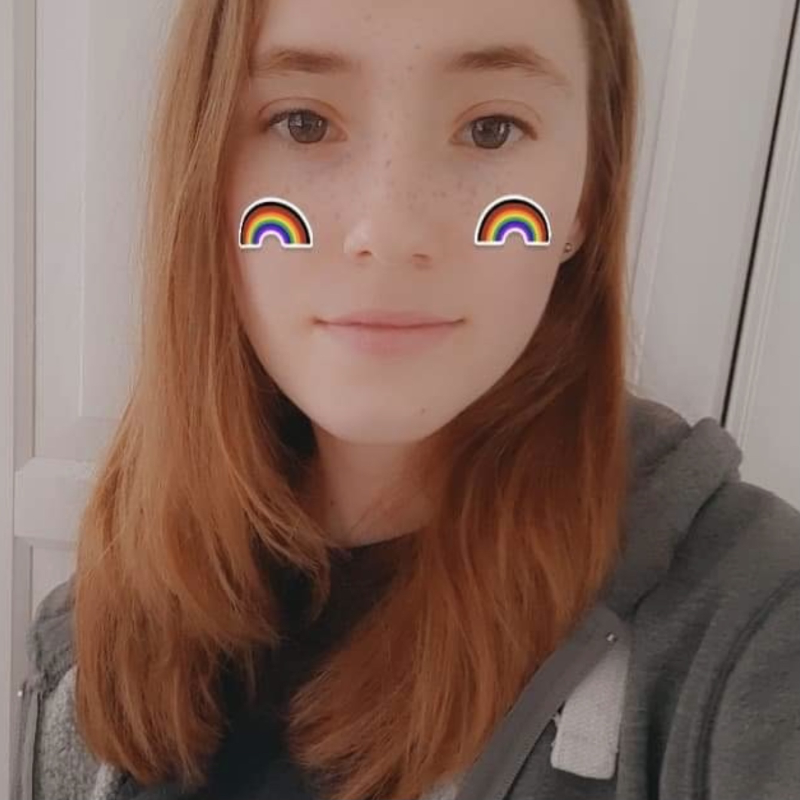

Abbie Thompson
(she/her)

Abbie is one of our 6 artists for the team, studying Game Development: Art at Falmouth University.
She really enjoys doing stylised character art and takes a keen interest in UI.
Cassy Cornish
(she/her)

Cassy is one of our generalist Game Designers, studying Game Development: Design at Falmouth University.
She is a loving mother to 3 cats.
Egg Christopher
(she/they)

Egg is one of our designers, studying Game Development: Design at Falmouth University.
Hayley Davies
(she/they)

Hayley is one of our few programmers, studying Game Development: Programming at Falmouth University.
She is primarily focused on Gameplay and Tools programming within the team and is a wizard with git, aiding in the overall team usage of git and git flow to effectively manage our projects.
They are also our social media manager, marketing our team on Twitter and developing this site from scratch.
Hayley streams occasionally, mainly playing games but also making them too.
Iwan Jones
(he/him)

Iwan is our sole animator for the team, studying Game Development: Animation at Falmouth University.
He is primarily a gameplay animator however dabbles in character animation and rigging on the side.
Jay Dixon
(they/them)

As one of the Game Artists for our team, Jay helps to provide any concept art, character models or assets for the game.
In their free time, Jay enjoys live streaming a variety of games over on Twitch.
This variety ranges from survival-based games to story-based ones.
Furthermore, Jay's all-time favourite game is The Last of Us, and they hope that one day they can work on a game that has as much, or even more of an impact on those who play it.
Josh Thompson
(he/they)

Josh is one of the few programmers in our team.
He loves being faced with programming challenges and will code until 4am if not told otherwise.
He has previosuly released his own indie game titled "Cowboys n' Stuff" on Steam!
Matt Roberts
(he/him)

Matt is one of our 3 programmers on the team, he's studying Games Development Programming at Falmouth University.
Recently he's been working on AI and game mechanic integration. Often complains how hard AI is and how much it makes him cry but secretly he loves it.
Matt also gets up to a bunch of other stuff like 3D Printing (gruttels when?), making music and streaming on Twitch.
Naomi Lakin
(she/her)
Naomi is one of our 6 artists for the team, studying Game Art at Falmouth University.
She is primarily a concept artist with a focus in character art.
However, she does also dabble in 3D within her projects!
She has experience in other disciplines such as Graphic Design and 3D modelling for engineering.
Nyah Payne
(she/her)

Nyah is the writer for Trojan Mouse, studying Game Development: Writing at Falmouth University.
Most of Nyah's time is spent writing for games, writing in general, or playing games (including tabletops).
When she's not writing or gaming, Nyah can most likely be found roaming the Cornish wilderness and admiring the animals.
She misses her two pet dogs and her tarantula, called Paladin, very much.
It's no wonder she fell in love with the gruttels!
Nyah absolutely loves the course and will enthusiastically discuss it with any who care to listen! She is excited to introduce the world to the first game developed by Trojan Mouse and hopes that you will enjoy the world of Holmfen as much as we have!
Oliver Britland
(he/him)

Oliver is one of our 6 artists for the team, studying Game Development: Art at Falmouth University.
He specilises in 3d art and can pet cats really well.
He also believes that crunching is for chads.
Oliver Gisborne
(he/him)

Oliver is one of our 6 artists for the team, studying Game Art at Falmouth University.
He occasionally plays games when he isn't doing arty things, with a primary focus on playing Dungeons and Dragons.
Otis Hull
(he/him)

Otis is our sole audio designer for the team, studying Game Development: Audio at Falmouth University.
Otis aims to work as a sound designer and foley artist, primarily in games, but loves the idea of working with sound in anyform.
He's a strong Gruttel enthusiast.
He's on a constant crusade against "gamer headsets".
Ryan Minty
(he/him)

Ryan is one of part of our design team here at TrojanMouse Games
He's a 2nd Year Game Development: Design student at Falmouth University where he's both a course rep and overall department rep.
He has a heavy interest in narrative design in particular; primarily spending his time obsessing over games with good stories.
Sophie James
(she/her)
Sophie is one of our 6 artists for the team, studying Game Art at Falmouth University.